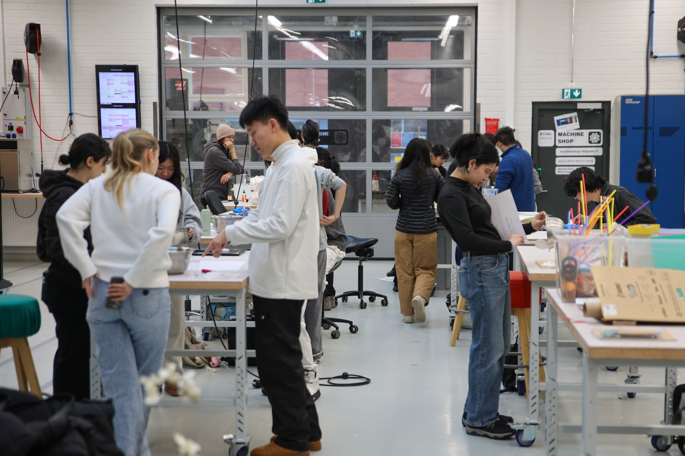
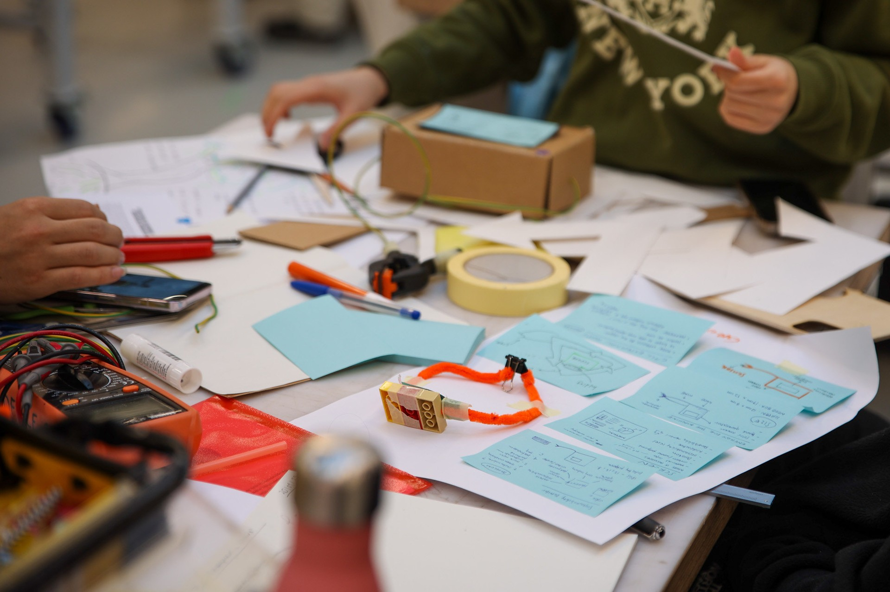
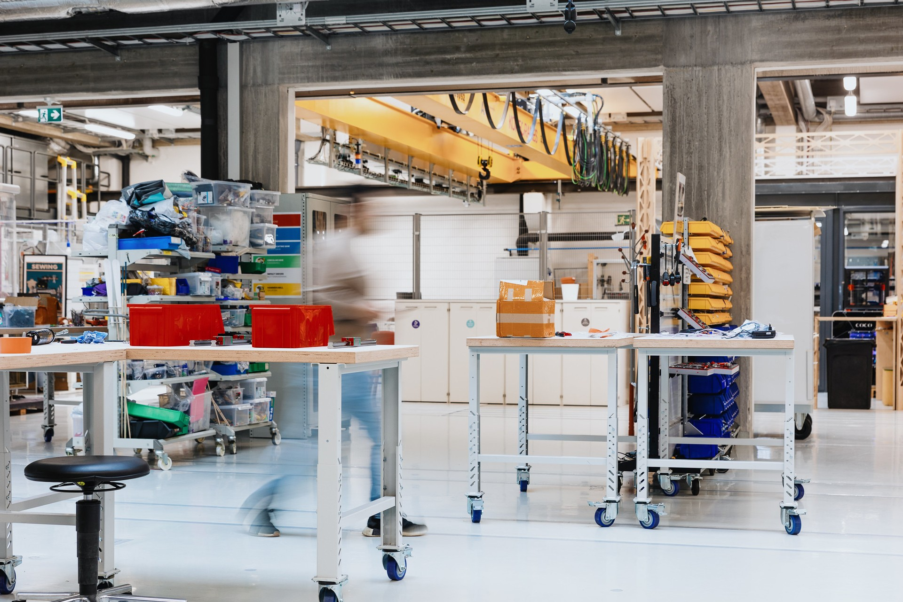
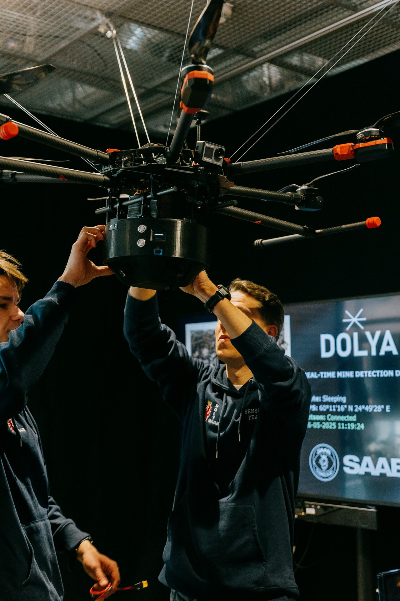

01どう動かしているのか。
企業が未解決の開発課題を提案し、教員と内容を調整する。スポンサーは学生に課題を説明し、期間中の窓口担当者を置いて更新・助言の頻度をチームと決める。通常約8人の学際チームには学生プロジェクトマネジャーを配置。9月の編成から5月のGalaまで、利用者調査、概念探索、制作、試験を重ね、機能する試作品を公開する。公式スポンサー要項は成果知財をスポンサーへ引き渡すと明記している。工作設備は学生案件を優先し、研究・一般コミュニティはその後に配置。時間外利用には訓練が必要で、高度な機械は原則職員が扱う。自由な交流を支える一方、設備の優先順位、安全、企業側の関与を具体的な運用条件にしている。教員の支援と試作専門家の安全管理を併用する。
- 企業課題を教員と具体化
- 学生が課題と仲間を選ぶ
- 利用者調査→試作→試験
- 機能試作品をGalaで公開
- 成果・知財を企業へ接続
02誰が負担し、誰が担うか。
PdPスポンサー企業が1案件€15,000＋VATを負担。大学全体の基盤費と拠点総運営費の配賦は未確認。
制度やプログラムの財源と、各参加企業・地域に発生する費用は同じではありません。公開範囲を超える案件別予算・契約条件は未確認です。
03確認できたこと。
PdPは通常約8人のチームに学生プロジェクトマネジャーを配置し、年間約150〜200人が参加。
読み取れる範囲：参加人数は教育活動の規模であり、商品化率・事業成果ではない。
原典で確かめる ↗ 出典の説明 ↓04日本で活かすなら。
本調査の提案：日本の共創拠点が移すべき要素は、明るい工房より『課題提供者の継続参加』と『小人数チームの責任構造』である。自治体や地域企業の課題を学生に渡す際は、現場責任者・学習責任者・試作専門家を分け、現場訪問の権限と材料費を先に確保する。成果を評価する際は、学生の学習とスポンサーの事業成果を分けて記録する。学生を安価な外注先にせず、失敗できる教育目的、指導時間、発表・知財の条件を事前合意する。企業が試作品を受け取った後の担当者と追加予算まで用意すれば、年度末の発表会で案件が止まるリスクを減らせる。
05そのまま真似できないこと。
大学教育と企業の納期・知財要求は一致しない場合がある。参加者数や試作品数だけでは、混成チームが単独専門チームより優れるという因果関係は確認できない。スポンサーの継続参加には社員の時間という追加費用がかかる。公開資料では全案件の調達・商品化・中止・3年継続率を確認できず、特許出願事例をプログラム全体の成功率へ拡大して解釈できない。
06次に、何を確かめるか。
提案・未実施：拠点運営者が6案件を9か月追跡し、企業担当者の月次参加を契約化した案件と従来案件で試験完了率・手戻り時間・卒業後6か月の企業引継率を比較。学習成果が損なわれる、または指導込み総工数が増えるだけなら課題の粒度と企業関与方法を変更する。
07現場を、写真と動画で。

PHOTO: Aalto Design Factory · 掲載元 ↗ · Official press/media permission ↗ · 縮小・表示枠に合わせた切り抜き。色変更なし。

PHOTO: Aalto Design Factory · 掲載元 ↗ · Official press/media permission ↗ · 縮小・表示枠に合わせた切り抜き。色変更なし。

PHOTO: Photo: Adela Navratilova; color: George Atanassov / Aalto Design Factory · 掲載元 ↗ · Official press/media permission ↗ · 縮小・表示枠に合わせた切り抜き。色変更なし。

PHOTO: Aalto Design Factory · 掲載元 ↗ · Official press/media permission ↗ · 縮小・表示枠に合わせた切り抜き。色変更なし。
冒頭写真：DF Labs内で複数の学生チームが共同作業する実習風景。
公式サイトで、写真・最新の活動を見る ↗